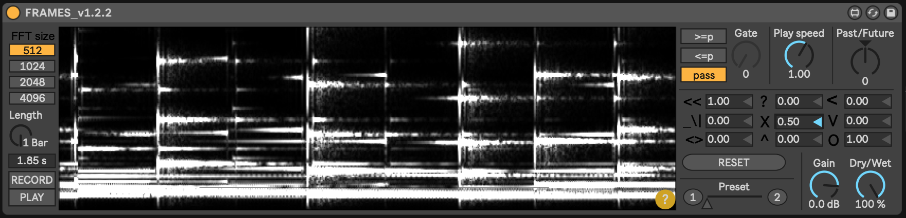
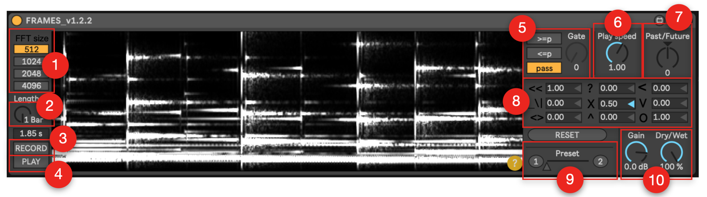

WHAT IS FRAMES
FRAMES is a simple and free graphical spectral processing tool for Ableton Live. With it you can synthesize unexpected sounds, complex spectral textures and irregular rhythmic loops.
Developed with Max for Live by Alberto Barberis and Alberto Ricca/Bienoise, FRAMES allows you to record a sample from an Ableton Live track, to manipulate graphically its sonogram and than to resynthesize it in real-time and in loop. The implementation of this technique is based on the amazing work by Jean-Francois Charles. For more info check this.
The loop region is in sync with the tempo and the time signature of Ableton Live. The FFT analysis can be performed with a size of 512, 1024, 2048, 4096 samples (adapting it to the type of sound material).
The possible sound-image transformations are:
FRAMES offers a deep user interface to control the graphical transformations parameters, with immediate sonical results. Besides it allows you to set the amount of processing with a Dry/Wet control, and also to save two different presets and to interpolate between them.
Developed with Max for Live by Alberto Barberis and Alberto Ricca/Bienoise, FRAMES allows you to record a sample from an Ableton Live track, to manipulate graphically its sonogram and than to resynthesize it in real-time and in loop. The implementation of this technique is based on the amazing work by Jean-Francois Charles. For more info check this.

With FRAMES you create a 2D image of the sonogram of a sound source (with FFT analysis). Than you
manipulate it with some graphical transformations before resynthesizing it in loop and in real-time.
The loop region is in sync with the tempo and the time signature of Ableton Live. The FFT analysis can be performed with a size of 512, 1024, 2048, 4096 samples (adapting it to the type of sound material).
The possible sound-image transformations are:
- a spectral gate effect (with two different modes that allows you to maintain only the spectrum components with a magnitude higher or lower than a threshold);
- a spectral time stretch (changing the playback speed);
- a spectral "time-blur" (Future) or "time-drier" (Past) (a sort of spectral reverb amount);
- the application of a graphical transformation matrix, that allows you to perform scaling, rotation, skewing and perspective operation on the spectrogram;
FRAMES offers a deep user interface to control the graphical transformations parameters, with immediate sonical results. Besides it allows you to set the amount of processing with a Dry/Wet control, and also to save two different presets and to interpolate between them.
HOW TO INSTALL FRAMES
- Download the FRAMES folder from THIS REPOSITORY and click on "Clone or Download".
- Unzip the folder
- place the device directly in an audio track, or place it in your Ableton User Library folder: Ableton/User Library/Presets/Audio Effects/Max Audio Effects;
HOW TO USE FRAMES

- Send an audio to the device (for example playing a clip in the track that contains the device);
- Choose the FFT frame size ① (adapting it to the type of sound material: 512 samples for percussive sounds, 4096 for texture sounds);
- Choose the length (in bars or seconds) of the sample that you want to record and process ②;
- Clik the Record button ③ (if you ckick on the Play button ④ you will hear the real-time resynthesis);
- Start your graphical manipulation:
- using the two types of gate effect ⑤ (or bypass it clicking on pass);
- changing the playback speed ⑥;
- changing the amount of the "spectral reverb" ⑦;
- changing the transformation matrix parameters being inspired by the symbols ⑧ (when everything goes crazy use the Reset button);
- When you find a configuration that you like save it in a preset (1 or 2) and try to interpolate between presets;
- Set your desired output gain and Dry/Wet amount;
- Enjoy!
FRAMES by Alberto Barberis and Alberto Ricca is licensed under a Creative Commons Attribution-NonCommercial-ShareAlike 4.0 International License.